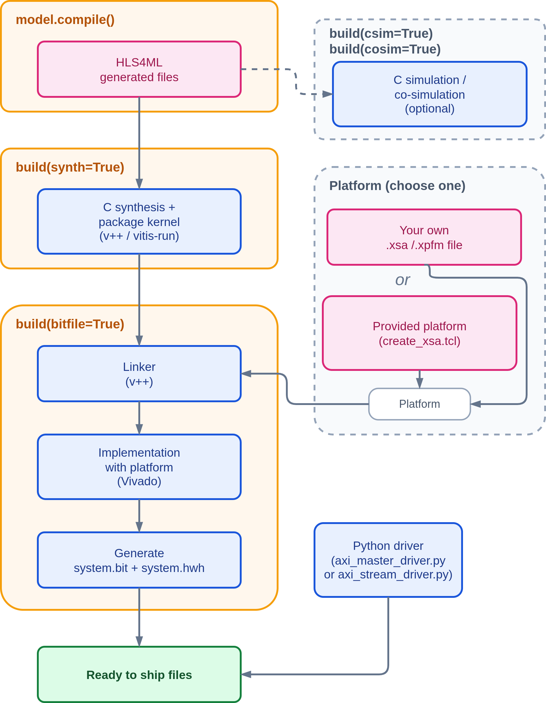
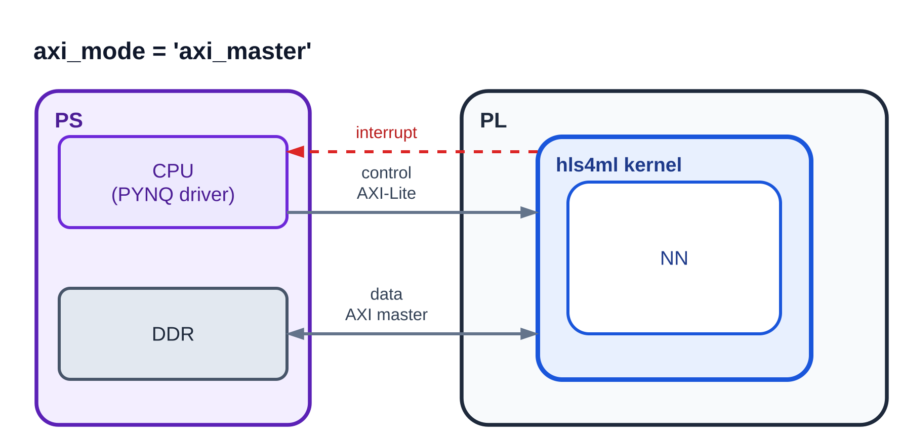
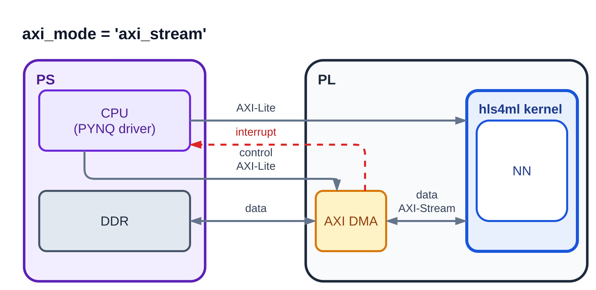

VitisUnified
The VitisUnified backend provides an end-to-end workflow for AMD SoC boards, from an ML model to a design that is ready to deploy on PYNQ. It is inherited from the Vitis backend. We use the new Vitis Unified software, which can automatically link the HLS kernel to the system hardware. The current version supports only SoC boards with a PYNQ Python driver.
It is the recommended flow for AMD SoC boards with Vitis 2023.2 or newer. Models with io_parallel or with ap_fixed interface types stay with the VivadoAccelerator backend.
Currently hls4ml officially supports the following boards and tool versions:
If you use another board, another Vivado version, or want to optimize the system design for your own workload, you can build your own platform. The steps are covered in the platform setup tutorial in the accelerator backend section of the hls4ml-tutorial repository.
System Flow
The figure below shows the flow of the backend, from the generated HLS files to the files that are ready to ship to the board.
{kind=link}

AXI interface modes
The backend supports two ways to move data between the PS and the kernel, selected with axi_mode.
In both modes the CPU controls the kernel through AXI-Lite and receives an interrupt when the kernel is done.
axi_master(default)The kernel reads its input and writes its output in DDR by itself through an AXI master port. The driver allocates one DDR buffer per model input and output, so models with several inputs or outputs are supported. It takes the offsets of the pointer and batch-size registers from the hardware handoff file through PYNQ, so it does not depend on the register layout.

axi_streamThe kernel has one AXI-Stream input and one AXI-Stream output. An AXI DMA in the platform moves the data between DDR and the kernel. Only models with one input and one output are supported. The driver expects the DMA instance to be called
axi_dma_0; another name can be passed with itsdma_nameargument.
The stream interface follows this contract:
Each beat carries one element. The data field uses the
input_typeformat, 32 bits forfloatand 64 bits fordouble. The platforms built by the shipped Tcl scripts have a 32-bit DMA, sodoubleis rejected with them and needs your own platform.For each kernel start the kernel reads exactly
batch_size × N_INinput beats and writes exactlybatch_size × N_OUToutput beats.N_INandN_OUTare the flattened input and output sizes of the model.TLASTis set only on the last output beat of the batch.TLASTon the input is ignored, so a transfer with fewer beats than expected makes the kernel wait.TKEEPis driven all-ones on every output beat. It is required by the AXI DMA, which never completes a transfer without it.TKEEPon the input is not checked, every beat is taken as a full element.
{kind=link}
{kind=link}
Configuration options
The options below are passed as keyword arguments to the converter (for example convert_from_keras_model).
They are stored under VitisUnifiedConfig in the model configuration.
Option |
Default |
Description |
|---|---|---|
|
|
Target board.
It selects the FPGA part, the platform, and the Python driver template.
The current version only supports the boards in
supported_boards.json (zcu102 and kv260).Any other board name is rejected with an error, unless
platform and part are given.You can use your own board: build its platform by following the platform setup tutorial in the hls4ml-tutorial repository and pass it with
platform. |
|
from board |
FPGA part name.
If not given, it is taken from the board entry in
supported_boards.json. |
|
|
Path to your own platform file,
.xpfm or .xsa.When given, the platform of the board entry is not used, so a board that is not in
supported_boards.json works together with part.The driver does not depend on the platform, only on the linked design. For
axi_master any Vitis embedded platform with a PS, DDR, and an interrupt input works.For
axi_stream the platform must expose the two AXI-Stream ports of an AXI DMA with the tags DMA_MM2S and DMA_S2MM, and the DMA’s s2mm_introut must reach the PS. The shipped Tcl scripts show how. |
|
|
Kernel clock period in ns.
The same clock is used when the kernel is linked to the platform.
|
|
|
Clock uncertainty passed to Vitis HLS. The default is the same as in the Vitis backend.
|
|
|
hls4ml I/O type of the model.
The current version only supports
io_stream. |
|
|
Interface between the PS and the kernel:
axi_master or axi_stream.See AXI interface modes.
|
|
|
Type of driver generated for the board.
The current version only supports
python (PYNQ). |
|
|
Data type of the model input on the AXI interface.
The current version only supports
float and double.The PYNQ driver uses the matching NumPy type.
|
|
|
Data type of the model output on the AXI interface.
The current version only supports
float and double.It must be the same as
input_type. |
|
|
Depth of the FIFO between the wrapper input (AXI master read or AXI-Stream) and the HLS model. Used in both AXI modes.
The unit is one entry of the model input stream. One entry holds the last dimension of the input shape: the channels of one pixel for an image, the whole vector for a flat input.
One sample takes
N_IN / channels entries. For a 4x4x1 input an entry is one element and the default holds 8 samples; for a 32x32x3 input an entry is 3 elements and the default holds 128 of the 1024 entries of one sample. |
|
|
Depth of the FIFO between the HLS model and the wrapper output (AXI master write or AXI-Stream). Used in both AXI modes.
The unit is one entry of the model output stream. One entry holds the last dimension of the output shape, and one sample takes
N_OUT / channels entries, the same rule as for the input. |
Example:
hls_model = hls4ml.converters.convert_from_keras_model(model,
hls_config=config,
output_dir='hls4ml_prj_unified',
backend='VitisUnified',
board='kv260',
axi_mode='axi_stream',
clock_period=10,
in_stream_buf_size=256,
out_stream_buf_size=256)
The version argument of the converter (default 1.0.0) sets package.ip.version of the kernel, and the generated driver binds to xilinx.com:hls:<top>:<major.minor>.
Output directory layout
All paths inside the generated files are relative, so the output directory can be moved or copied to another machine.
<output_dir>/
├── firmware/ HLS sources: model, AXI wrapper, weights
├── tb_data/ testbench input and reference output
├── <project_name>_test.cpp C testbench of the AXI wrapper
├── <project_name>_bridge.cpp bridge used by hls_model.predict()
├── build_lib.sh builds the shared library for predict()
├── hls4ml_config.yml
├── fifo_depths.json with FIFO depth optimization only
├── <step>_stdout.log, <step>_stderr.log with log_to_stdout=False only
├── vitis_workspace/
│ ├── <project_name>/
│ │ ├── vitis-comp.json Vitis Unified component
│ │ ├── hls_kernel_config_csim.cfg Vitis HLS config for csynth, package, and csim
│ │ ├── hls_kernel_config_cosim.cfg the same for cosim
│ │ ├── hls_kernel_config_cosim_fifo_sizing.cfg cosim with FIFO sizing on (vitis_fifo_sizing=True)
│ │ └── vitis_unified_project/ hls/, logs/, reports/, <project_name>_axi_*.xo
│ ├── system_link/
│ │ ├── link_system.cfg, link_system.sh
│ │ ├── <project_name>.xclbin link output (bitfile=True)
│ │ └── _x/ Vivado project of the system link
│ └── <board>/
│ └── tcl_scripts/ create_xsa.tcl, platform tcl, output/<board>_*.xsa
├── export/
│ ├── system.bit bitstream (bitfile=True)
│ ├── system.hwh hardware handoff (bitfile=True)
│ └── axi_master_driver.py or axi_stream_driver.py
└── final_reports/ timing, utilization, power, link summary, hls_compile.rpt
Build options
hls_model.build() runs the Vitis tools on the written project. Each step is selected with a keyword argument.
Argument |
Effect |
|---|---|
|
Runs C synthesis with |
|
Runs the C simulation of the AXI wrapper with the generated test bench. |
|
Runs RTL co-simulation. It turns on |
|
Runs the FIFO depth optimization. It turns on |
|
Uses the FIFO sizing feature of Vitis HLS during co-simulation. It turns on |
|
Links the packaged kernel to the board platform and writes the bitstream and the hardware handoff file to |
|
Writes the output of each step to |
|
Deletes the Vitis HLS project and the link work directory before the selected steps run. |
|
Accepted for compatibility with the other backends. They are ignored with a warning. The kernel is always packaged by |
build() returns a dictionary with the same keys as the Vitis backend: CSynthesisReport after synth=True and CosimReport after cosim=True.
The raw reports are under vitis_workspace/<project_name>/vitis_unified_project/ and, after bitfile=True, under final_reports/.
Limitations
The following are not supported in this version:
io_parallelmodels. Onlyio_streamis supported.Fixed-point interface types.
input_typeandoutput_typemust befloatordouble, and they must be the same.Weights that become external BRAM ports through
BramFactor. The conversion stops with an error.Models with several inputs or outputs in
axi_streammode. Useaxi_masterfor them.doubleinaxi_streammode with the shipped platforms. Their DMA is 32 bits wide, so pass your own platform with a 64-bit DMA.Multigraph models.
A C or C++ host driver. Only the Python (PYNQ) driver is generated.
Boards other than SoC boards with a PYNQ driver.
Tutorial
A step-by-step tutorial with notebooks is available in the accelerator backend section of the hls4ml-tutorial repository. It covers prediction, C simulation, co-simulation, FIFO depth optimization, bitstream generation, and how to build your own platform.